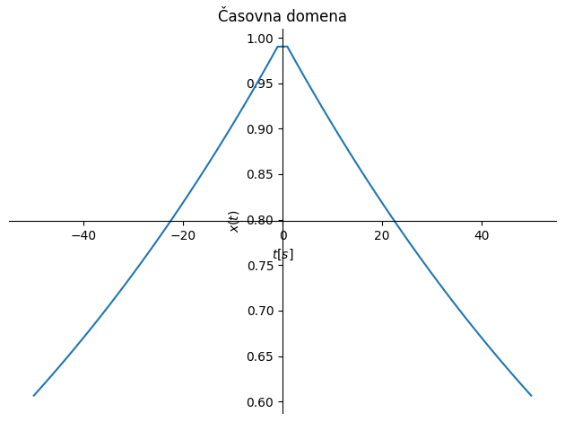
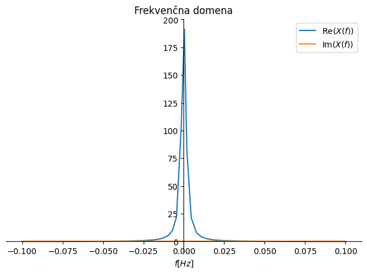
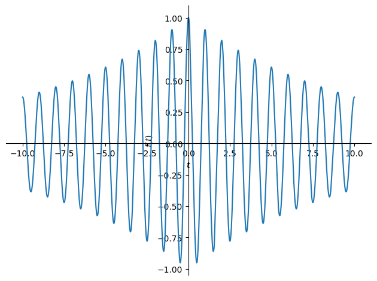

import sympy as sym
t, f = sym.symbols('t, f', real=True)
η = sym.symbols('\eta', real=True, positive=True)
podatki = {η: .01}
x = sym.exp(-η*sym.Abs(t))
X = sym.fourier_transform(x, t, f)
<>:3: SyntaxWarning: invalid escape sequence '\e'
<>:3: SyntaxWarning: invalid escape sequence '\e'
C:\Users\janko\AppData\Local\Temp\ipykernel_4644\3211874924.py:3: SyntaxWarning: invalid escape sequence '\e'
η = sym.symbols('\eta', real=True, positive=True)
X
\[\displaystyle \frac{2 \eta}{\eta^{2} + 4 \pi^{2} f^{2}}\]
sym.plot(x.subs(podatki), (t,-50,50), xlabel='$t [s]$', ylabel='$x(t)$', title='Časovna domena')
p1 = sym.plot(sym.re(X.subs(podatki)), (f,-.1,.1), xlabel='$f [Hz]$', label='Re$(X(f))$', ylabel='', title='Frekvenčna domena', show=False)
p2 = sym.plot(sym.im(X.subs(podatki)), (f,-.1,.1), line_color='C1', label='Im$(X(f))$', show=False)
p1.extend(p2)
p1.legend = True
p1.show()


import sympy as sym
t, f = sym.symbols('t, f', real=True)
η = sym.symbols('\eta', real=True, positive=True)
podatki = {η: 0.1}
x = sym.sign(t)*sym.exp(-η*sym.Abs(t))
X = sym.fourier_transform(x, t, f)
sym.plot(x.subs(podatki), (t,-50,50), xlabel='$t [s]$', ylabel='$x(t)$', title='Časovna domena')
p1 = sym.plot(sym.re(X.subs(podatki)), (f,-.1,.1), xlabel='$f [Hz]$', label='Re$(X(f))$', ylabel='',
title='Frekvenčna domena', show=False)
p2 = sym.plot(sym.im(X.subs(podatki)), (f,-.1,.1), line_color='C1', label='Im$(X(f))$', show=False)
p1.extend(p2)
p1.legend = True
p1.show()
<>:3: SyntaxWarning: invalid escape sequence '\e'
<>:3: SyntaxWarning: invalid escape sequence '\e'
C:\Users\janko\AppData\Local\Temp\ipykernel_4644\664348604.py:3: SyntaxWarning: invalid escape sequence '\e'
η = sym.symbols('\eta', real=True, positive=True)
import sympy as sym
t, f, d = sym.symbols('t, f, d', real=True)
η = sym.symbols('\eta', real=True, positive=True)
podatki = {η: 0.1, d: 10}
x = sym.Heaviside(t-d)*sym.exp(-η*sym.Abs(t-d))
# x = sym.sign(t-d)*sym.exp(-η*sym.Abs(t-d)) # časovni zamik, liha funkcija, povprečje nič
x2 = sym.Heaviside(t)*sym.exp(-η*sym.Abs(t))
x3 = sym.I*sym.Heaviside(t-2*d)*sym.exp(-η*sym.Abs(t-2*d)) # kompleksna časovna vrsta; to bo hitro
# x3 = sym.I*sym.sign(t-2*d)*sym.exp(-η*sym.Abs(t-2*d)) # kompleksna časovna vrsta; to bo hitro, liha funkcija, povprečje nič
# x = x + sym.I*sym.sign(t)*sym.exp(-η*sym.Abs(t)) # kompleksna časovna vrsta; to bo trajalo
X = sym.fourier_transform(x, t, f)
X2 = sym.fourier_transform(x2, t, f)
X3 = sym.fourier_transform(x3, t, f)
p1 = sym.plot(x.subs(podatki), (t,-50,50), xlabel='$t [s]$', ylabel='$x(t)$',
line_color='C0', title='Časovna domena', show=False, label=f'${sym.latex(x)}$')
p2 = sym.plot(x2.subs(podatki), (t,-50,50), line_color='C1', label=f'${sym.latex(x2)}$', show=False)
p3 = sym.plot(sym.im(x3).subs(podatki), (t,-50,50), line_color='C2', label=f'Im(${sym.latex(x3)}$)', show=False)
p1.extend(p2)
p1.extend(p3)
p1.legend = True
p1.show()
p1 = sym.plot(sym.Abs(X.subs(podatki)), (f,-.1,.1), line_color='C0', xlabel='$f [Hz]$', ylabel='$|X(f)|$',
title='Frekvenčna domena - amplituda', show=False, label=f'${sym.latex(x)}$')
p2 = sym.plot(sym.Abs(X2.subs(podatki)), (f,-.05,.05), line_color='C1', label=f'${sym.latex(x2)}$', show=False)
p3 = sym.plot(sym.Abs(X3.subs(podatki)), (f,-.075,.075), line_color='C2', label=f'${sym.latex(x3)}$', show=False)
p1.extend(p3)
p1.extend(p2)
p1.legend = True
p1.show()
p1 = sym.plot(sym.arg(X.subs(podatki)), (f,-.1,.1), line_color='C0', ylabel='$\\angle X(f)$',
title='Frekvenčna domena - faza', show=False, label=f'${sym.latex(x)}$')
p2 = sym.plot(sym.arg(X2.subs(podatki)), (f,-.1,.1), line_color='C1', label=f'${sym.latex(x2)}$', show=False)
p3 = sym.plot(sym.arg(X3.subs(podatki)), (f,-.1,.1), line_color='C2', label=f'${sym.latex(x3)}$', show=False)
p1.extend(p2)
p1.extend(p3)
p1.legend = True
p1.show()
<>:3: SyntaxWarning: invalid escape sequence '\e'
<>:3: SyntaxWarning: invalid escape sequence '\e'
C:\Users\janko\AppData\Local\Temp\ipykernel_4644\2331919166.py:3: SyntaxWarning: invalid escape sequence '\e'
η = sym.symbols('\eta', real=True, positive=True)
import sympy as sym
t, f = sym.symbols('t, f', real=True)
δ = sym.symbols('\delta', real=True, positive=True)
f_0 = sym.symbols('f_0', real=True, positive=True)
i = sym.I
π = sym.pi
podatki = {δ: 0.1, f_0: 1}
x_1 = sym.exp(-δ*sym.Abs(t))*sym.cos(2*π*f_0*t)
x_2 = sym.Heaviside(t)*sym.exp(-δ*t)*sym.cos(2*π*f_0*t)
X_1 = sym.fourier_transform(x_1, t, f)
X_2 = sym.fourier_transform(x_2, t, f)
X_1
<>:3: SyntaxWarning: invalid escape sequence '\d'
<>:3: SyntaxWarning: invalid escape sequence '\d'
C:\Users\janko\AppData\Local\Temp\ipykernel_4644\576789627.py:3: SyntaxWarning: invalid escape sequence '\d'
δ = sym.symbols('\delta', real=True, positive=True)
\[\displaystyle \frac{2 \delta \left(\delta^{2} + 4 \pi^{2} f^{2} + 4 \pi^{2} f_{0}^{2}\right)}{\delta^{4} + 8 \pi^{2} \delta^{2} f^{2} + 8 \pi^{2} \delta^{2} f_{0}^{2} + 16 \pi^{4} f^{4} - 32 \pi^{4} f^{2} f_{0}^{2} + 16 \pi^{4} f_{0}^{4}}\]
sym.plot(x_1.subs(podatki))

<sympy.plotting.plot.Plot at 0x196730b1f70>
X_1
\[\displaystyle \frac{2 \delta \left(\delta^{2} + 4 \pi^{2} f^{2} + 4 \pi^{2} f_{0}^{2}\right)}{\delta^{4} + 8 \pi^{2} \delta^{2} f^{2} + 8 \pi^{2} \delta^{2} f_{0}^{2} + 16 \pi^{4} f^{4} - 32 \pi^{4} f^{2} f_{0}^{2} + 16 \pi^{4} f_{0}^{4}}\]
import sympy as sym
t, f = sym.symbols('t, f', real=True)
a = sym.symbols('a', real=True, positive=True)
x = sym.exp(-a*t**2)
X = sym.fourier_transform(x, t, f)
X
\[\displaystyle \frac{\sqrt{\pi} e^{- \frac{\pi^{2} f^{2}}{a}}}{\sqrt{a}}\]
import sympy as sym
t, f = sym.symbols('t, f', real=True)
a = sym.symbols('a', real=True, positive=True)
x = sym.exp(-a*t**2)
X = sym.fourier_transform(x, t, f)
podatki = {a: 10}
p1 = sym.plot(x.subs(podatki), (t, -2, +2), line_color='C0',
label=f'$a={a.subs(podatki)}$', show=False,
title='Časovna domena', ylabel='$x(t)$', xlabel='$t$')
p1.legend = True
p1.show()
p1 = sym.plot(sym.Abs(X).subs(podatki), (f, -2, +2), line_color='C0',
label=f'$a={a.subs(podatki)}$'+', Max=$\sqrt{\pi/a}=$'+f'{sym.sqrt(sym.pi/a).evalf(subs=podatki):3.2f}', show=False,
title='Frekvenčna domena - amplituda', ylabel='$|X(f)|$', xlabel='$f$')
p1.legend = True
p1.show()
<>:16: SyntaxWarning: invalid escape sequence '\s'
<>:16: SyntaxWarning: invalid escape sequence '\s'
C:\Users\janko\AppData\Local\Temp\ipykernel_4644\1256231345.py:16: SyntaxWarning: invalid escape sequence '\s'
label=f'$a={a.subs(podatki)}$'+', Max=$\sqrt{\pi/a}=$'+f'{sym.sqrt(sym.pi/a).evalf(subs=podatki):3.2f}', show=False,
import sympy as sym
t, t_0, f, a = sym.symbols('t, t_0, f, a', real=True)
i = sym.I
π = sym.pi
x_1 = sym.exp(-t**2)
x_2 = x_1.subs(t, t-t_0)
podatki = {t_0: 0.5}
X_1 = sym.fourier_transform(x_1, t, f)
X_2 = sym.fourier_transform(x_2.subs(podatki), t, f)
X_3 = X_2/sym.exp(-i*2*π*f*t_0)
p1 = sym.plot(x_1.subs(podatki), (t, -2, +2), line_color='C0',
label=f'$t=t$', show=False,
title='Časovna domena', ylabel='$x(t)$', xlabel='$t$')
p2 = sym.plot(x_2.subs(podatki), (t, -2, +2), line_color='C1',
label=f'$t=t-t_0$, $t_0=${t_0.subs(podatki):3.2f}', show=False)
p1.extend(p2)
p1.legend = True
p1.show()
p1 = sym.plot(sym.Abs(X_1).subs(podatki), (f, -2, +2), line_color='C0',
label=f'$t=t$', show=False,
title='Frekvenčna domena - amplituda', ylabel='$|X(f)|$', xlabel='$f$')
p2 = sym.plot(sym.Abs(X_2).subs(podatki), (f, -2, +2), line_color='C1',
label=f'$t=t-t_0$, $t_0=${t_0.subs(podatki):3.2f}', show=False)
p1.extend(p2)
p1.legend = True
p1.show()
p1 = sym.plot(sym.arg(X_1).subs(podatki), (f, -2, +2), line_color='C0',
label=f'$t=t$', show=False,
title='Frekvenčna domena - faza', ylabel='$\\angle X(f)$', xlabel='$f$')
p2 = sym.plot(sym.arg(X_2).subs(podatki), (f, -2, +2), line_color='C1',
label=f'$t=t-t_0$, $t_0=${t_0.subs(podatki):3.2f}', show=False)
p1.extend(p2)
p1.legend = True
p1.show()
p1 = sym.plot(sym.arg(X_3).subs(podatki), (f, -2, +2), line_color='C2',
label=f'$t=t$', show=True, ylim=[-3.2, 3.2],
title='Frekvenčna domena - faza - korekcija: $\mathcal{F}\{x(t-t_0)\} / \mathrm{e}^{-i\,2\pi\,f\,t_0}$', ylabel='$\\angle X(f)$', xlabel='$f$')
p1.legend = True
<>:44: SyntaxWarning: invalid escape sequence '\m'
<>:44: SyntaxWarning: invalid escape sequence '\m'
C:\Users\janko\AppData\Local\Temp\ipykernel_4644\222619657.py:44: SyntaxWarning: invalid escape sequence '\m'
title='Frekvenčna domena - faza - korekcija: $\mathcal{F}\{x(t-t_0)\} / \mathrm{e}^{-i\,2\pi\,f\,t_0}$', ylabel='$\\angle X(f)$', xlabel='$f$')